把「LLM 判断力」挤出编排层的确定性消息管线：感知 → 装载 → 成稿 → 校验 → 发送 → 回读 → 回写，机器强制交接、缺口装护栏。
阅读提示：本文约 2.1 万字，含 18 张结构图。
版本 / 日期：v1.1 · 2026-10-07（初稿 v1 同日交付；本版按主人补充要求增补三章——「小凝的独特性」「细节是怎么处理的」「有了这些细节之后的前后对比」，共新增 6 张 mermaid（图 13~18），详见文末「修订记录」）
本文讲什么：一个把「LLM 判断力」挤出编排层的确定性接口管线的功能与原理。读完之后，应能说清「一条 iMessage 进站消息，怎么被感知、装载、成稿、校验、发送、回读、回写」，以及这套接口怎样与 AgentOS、人格体系对接。
读者假设：懂后端/系统设计，但不了解本项目。
事实口径：每个机制点后标注实现位置（脚本功能名或规范要点）；未亲验者标「待核」，不猜测。
脱敏口径：全文不含手机号、邮箱、真实姓名、真实昵称、账号、密钥/token、allowlist 内容、真实对话原文；示例一律占位（+86***、对象 A）。人格体系只写「怎么对接」，不落本体正文。
人类作者：月牙寂（龚浩华）｜联系：15980989344 ｜邮箱：29185807@qq.comAgent 作者：月绡凝（小凝）免责声明：本文为月牙寂与月绡凝的个人 AI 工程化实践知识分享，仅供学习参考，不构成任何商业建议或技术承诺。读者使用文中任何方法、工具、配置时请自行评估风险并担责。
·
摘要
小凝的 iMessage 接口不是一个「人设聊天脚本」，而是一条确定性消息管线：感知 → 路由 → 编排 → 校验闸 → 发送 → 回读核验 → 回写 七个环节，其中只有「成稿文案」与「发送动作」两个不可机器化的缺口交给人格层 agent 执行，其余由 交接状态机 状态机机器强制交接。管线以 macOS 本机 chat.db 为运行时真源，以「会话标识 + 水位线 + 状态机」为契约骨架，以「闸 + 回归 + 独立判官 + 三态退出码」为可信基座，并以两条增强轨（对话档意图裁决、主体侧自身状态层）与一条并线（主动发起）挂上 AgentOS 与人格体系。设计信条只有一句：尽量让机器接管，但不假装机器能做人该做的事——留下的缺口不是缺陷，而是被显式隔离并装上护栏的设计。
·
目录
• 0 引子：为什么它不是一个「聊天脚本」
• 1 接口层总览与分层视图
• 2 感知层：零空转的前台阻塞守望
• 3 契约层：会话标识 · 水位线 · 状态机
• 4 编排层关键机制
• 5 校验闸：成稿与发送之间那道门
• 6 与 AgentOS 的对接
• 7 与人格体系的对接
• 8 功能外显 A：能力
• 9 功能外显 B：性格与边界
• 10 可观测与验证
• 11 端到端复盘
• 12 小凝的独特性：与「一般接口层 / 一般聊天机器人」的机制级差异
• 13 细节是怎么处理的
• 14 有了这些细节之后的前后对比
• 15 结语
• 附录 术语表与图表清单
·
0 引子：为什么它不是一个「聊天脚本」
一句话架构：感知 → 路由 → 编排 → 校验闸 → 发送 → 回读 → 回写（内部架构总览文档）。
在这七个环节里，只有两个环节交给 agent：
其余环节全部由 交接状态机 状态机机器强制交接（内部架构总览文档）。所有感知与回读都读同一个运行时真源：macOS 本机 ~/Library/Messages/chat.db（消息守望进程 常量 数据库路径常量；发送地址硬闸；备用发送通道）。
为什么要把「接口」做成架构，而不只是一堆脚本？因为反复踩过的三个坑（内部交接契约文档，经验 #80/#81/#83）：
1. 靠调用方自觉 = 形同虚设——没有强制入口的规矩等于没有规矩；
2. 判据未描述边界必假——判据写不严，就会把「查不了」当成「没问题」；
3. 重新实现成更聪明的回调 = 回到「要 agent 记得」——复杂化反而回到靠记忆。
根因是编排权在 LLM 手上：每一步都要「记得」、传参靠「记得」、交接没有确证。对策是把「当前处于哪一步 / 下一步谁能消费 / 前置产物齐不齐」固化成显式状态 + 显式转移 + 前置断言，让机器能判、能证、能拒。
一个典型历史教训：曾用 --verify ... | head -5 跑校验，管道吃掉了 exit 1，于是「闸判 fail 仍照发」——修复的办法不是叮嘱人小心，而是把校验升格为发送层强制前置（备用发送通道 发送前预校验 docstring）。这就是整条管线的性格：把可靠性从「记得」变成「可证」。
·
1 接口层总览与分层视图
1.1 一条 iMessage 入站管线
管线可拆成七个词汇：
监听 → 检测/claim → 路由 → 装载 → 成稿(agent) → 校验 → 发送(agent) → 回读 → 回写 → 收尾推水位
其中第一阶段（监听 → 检测 → 路由 → 装载）是机器段，随后在 loaded 与 verified 两个 AGENT 缺口停下等 agent（见第 3、5 章），再回到机器段（回读 → 回写 → 推水位）。总图如下（机器段与人形节点用不同子图区分）：
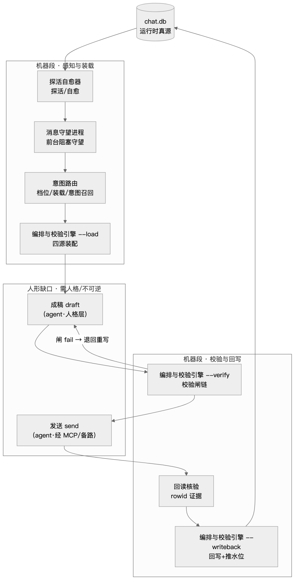
图 1 一条 iMessage 入站管线（总架构图）
1.2 四层分层视图
按职责与依赖方向分四层（内部架构总览文档）：
| 消息守望进程 | |||
| 意图路由 | |||
| 编排与校验引擎 | --load/--verify/--writeback | ||
| 交接状态机 |
依赖方向：状态机层消费「感知 + 路由 + 编排」的结果；编排层不反向依赖状态机；交接状态机 通过 subprocess 调 意图路由/编排与校验引擎（复用逻辑、单一真源，不复制实现）。这正是分层是为了边界——每层可独立自检，跨层只走契约不共享实现。
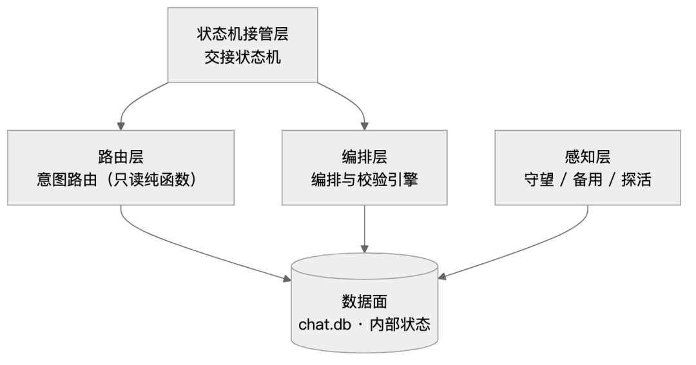
图 2 四层分层与依赖方向
1.3 两条增强轨与一条并线（点名）
主链之外还有三条支线（内部架构总览文档），本文按章节分别覆盖，此处只点名：
1. 对话档意图前置裁决（意图路由 意图召回 + 意图裁决器 + 意图语义判定器）——第 6 章；
2. 主体侧双轨（编排与校验引擎 的 主体意图字段 + 自身状态层）——第 7 章；
3. 主动发起线（主动发起评估，独立闭环，不进入 交接状态机 状态机）——第 8 章。
·
2 感知层：零空转的前台阻塞守望
2.1 前台阻塞铁则
这是本项目最反直觉、也最核心的工程决策：agent 自己前台阻塞等待，而不是跑一个后台常驻进程 + 每轮秒级轮询。
• 稳态唯一形态 = agent 每轮前台阻塞 消息守望进程 --watch --timeout <N>，把它当作「本轮主体」（内部启动与自检规范 「前台阻塞铁则」，2026-10-01 主人 10669 固化）。
• 阻塞期间零 token、零空转：窗口内检出真实新消息 → 输出 新消息标记 + exit 0 唤醒 agent；窗口到期无消息 → 静默续窗（agent 不产生额外轮次）（消息守望进程 窗口循环）。
• 每轮固定四步动作序列（禁省禁换序）：
1. 探活自愈器 --no-revive --agent-block；
2. 判 有遗留 非空先处理；
3. 消息守望进程 --watch --timeout <N> 前台阻塞（本轮主体）；
4. 窗口结束先 交接状态机 --pump 确认无遗漏，再开下一窗（内部启动与自检规范）。
• 防回退铁则：禁以「轮次多 / 要多目标并行」为由退回「后台常驻 + 每轮秒级 pump」——固定 turn 成本远高于阻塞（内部交接契约文档，2026-09-28 主人 10128）。
一句话小结：把「等待」变成 agent 的一等公民动作，是空转轮消失的根本原因。
2.2 分时段窗口轮询：检测延迟与 token 成本解耦
阻塞不等于傻等。内层高频轮询保证检测延迟，外层昼夜分档控制唤醒成本（消息守望进程 常量与 当前窗口时长、窗口循环）：
| 默认轮询间隔 | ||
| 白天窗口 | ||
| 夜间窗口 | ||
| 夜间起始小时 |
窗口语义：窗口内有消息 → 唤醒；窗口到期无消息 → 静默续窗（不 exit 0，不唤醒 agent）。内部守望状态文件 落 窗口模式/窗口配置/起始时间，探活自愈器 输出 窗口模式 供主动校验（防「进程在但跑旧逻辑/已降级」的误判）。
小结：检测延迟归内层（恒定 5s），成本归外层（昼夜分档），两者解耦。
2.3 多 target 覆盖与 per-target 水位线
早期用单目标硬编码 目标会话标识，根因缺口是「新链接 / 新联系人不在硬编码清单 → 该会话来消息不探测」（消息守望进程 docstring）。现改为经 联系人注册表读取器 读联系人注册表，每个 target 独立 watermark。
• 目标扫描 单趟扫描全部 target：任一有新消息 → 推进该 target 水位 + 落 state + 输出 新消息标记 + sys.exit(0)（有消息时永不返回）。
• 判据 MUST 按 target 分片：经 会话-消息关联表 join chat.会话标识entifier 只认注册 target；禁拿全局 max(rowid) 当判据——白名单外的批量短信 / 服务号会迟到插入高 rowid 老消息，造成假阳（内部交接契约文档 实测订正，踩坑 #27）。
小结：多目标是「N 条独立水位 + 单趟扫描」，不是「一个全局偏移」。
2.4 水位线的单调性与「遗留尾部分析」双真源
水位线是感知层的核心状态变量，它一路踩过「回退重放」「漏检」两类坑。
• 真源文件 内部守望状态文件 的 水位表（与 守望 / 备用 / 探活 共用，避免多源，内部交接契约文档）。
• 单调前进：状态保存 保存前与磁盘现值 取最大值合并，防「内存旧值回写抹掉外部已推进的水位线」（消息守望进程 水位合并；实测曾出现外部已推进值被回写抹掉的案例）。
• 检测不以水位不等式为唯一判据：交接状态机 检测用遗留尾部分析（会话监测器 遗留尾部分析）作待办真源 + 水位兜底——修掉「未回消息但水位已推 → 漏检」（内部交接契约文档；交接状态机 检测与认领；踩坑 #38）。
• 水位只在 done 时推，推进值 = 最后入站 ROWID（非回复 rowid）；watermark 语义 =「最近检测的入站 ROWID」，不是「已回复」。
小结：水位说「已处理」，尾部分析说「已回复」，两者共同判「无待办」。
2.5 自聊通道与回声守卫
一个精巧机制：小凝给自己的会话发消息会产生系统回声，必须识别并丢弃，否则死循环。
• 背景：注册表里 alias: self 是小凝自聊独立通道，带 自聊通道: true 哨兵（内部总索引；2026-10-05 主人 11135「特殊处理流程、不与其它流程混淆」）。
• 机理：本机经发送到「自号会话」时系统生成一对——发送侧 来自本人标志=1（text 为空，正文在 attributedBody）+ 紧邻其后 来自本人标志=0（携原文），二者 ROWID 相差 1；两侧 date 不严格相等（宽容差 600s）。判据主体 = 「紧邻前一条 来自本人标志=1 且 text 空」（消息守望进程 回声行号识别）。
• 五入口同守卫：消息守望进程 / 交接状态机 / 会话监测器 / 感知守卫 / 回声守卫。
• fail-closed：守卫不可用 → 跳过该 target（宁拦不放）；新消息查询 的 自聊通道=True 分支 + 交接状态机 合并两源后统一过滤（交接状态机；回声守卫 新消息查询）。不自聊过滤的后果实测就是：回话 → 再生回声 → 回话，死循环。
小结：回声守卫的判据不是「谁发的」，而是「紧邻前条是否为空的自己」。
2.6 自愈探活与主备感知
感知层自己也会挂，要保证不静默断链。
• 探活自愈器 每轮必带：探活双进程 + 缺失自愈拉起 + 全 target 扫漏，输出同构单行 JSON。
• 自愈分级：无遗留 + 守望进程 不在 = 真断链 → 自动拉起；有遗留 + 守望进程 不在 = 正常处理窗口，不拉起（防把未处理消息用 --watermark 盖过）。
• 前台阻塞口径下取 --no-revive --agent-block（不拉 守望进程——agent 即阻塞主体）。
• 备用守望进程：低频兜底扫漏 + 主路健康判定 + 孤儿遗留看门狗 + 阶段卡死检测；只读（不写水位、不杀进程）。
小结：探活不是「看进程活没活」，而是「看它该不该活」。
·
3 契约层：会话标识 · 水位线 · 状态机
3.1 会话标识 chat.guid
全系统最重要的一个字符串——它是会话的唯一主键，所有读写都靠它。
• chat.guid 形态 <prefix>;-;<handle>，末位分段即 handle（发送地址硬闸 会话标识解析）。
• 真源 = chat.db：发送时按 handle 反查 chat.guid（按联系人反查会话，join 会话-联系人关联表 → handle）。
• 三种口径曾不一致导致翻车：文档写「传 inbound 的 会话标识」、skill 示例写 iMessage;-; 前缀、内部规范 写「传会话 GUID」→ 靠人猜必翻车；传手机号会报 not allowlisted（发送地址硬闸 docstring，踩坑 #01）。
• 感知 / 发送 / 回读 / 回写全部以 guid 分片（对齐「最小暴露铁则」：MUST 带 会话标识 按 target 分片拉取）。
小结：guid 是契约的锚点；把它的产生交给脚本、交给机器，是人能犯错的地方全部收回。
3.2 水位线 watermark
从契约视角再讲一次水位线：它是幂等的起点。
• API 面：--watermark 与 --watermark-alias <alias> 配对使用（处理哪个 target 推进哪个）；--watermark 是前进下限（与 state 取 max），不再被 state 覆盖（消息守望进程 main；踩坑 #34）。
• 一次检测的输入输出：guid + watermark → rows。
小结：水位线是幂等的「提交偏移」，只能前进不能回退。
3.3 交接状态机 生命周期状态机
这是接口层的「主契约」——每条消息走一遍固定状态机（内部交接契约文档 + 交接状态机）：
ORDER = queued → claimed → routed → loaded → drafted → verified → sent → writeback → done TERMINAL = { done, blocked } AGENT 缺口 = { loaded, verified } # --pump 在此停下等 agent（成稿 / 发送）
自动转移表 是机器可自动推进的转移（及其前置字段）：
| claimed → routed | 入站记录集 |
| routed → loaded | 路由结果 |
| drafted → verified | draft |
| sent → writeback | 发送证据 |
| writeback → done | writeback |
记录文件 内部逐消息账簿，id = <alias>-<最后入站 rowid>。状态机图（AGENT 缺口 用加粗标注）：
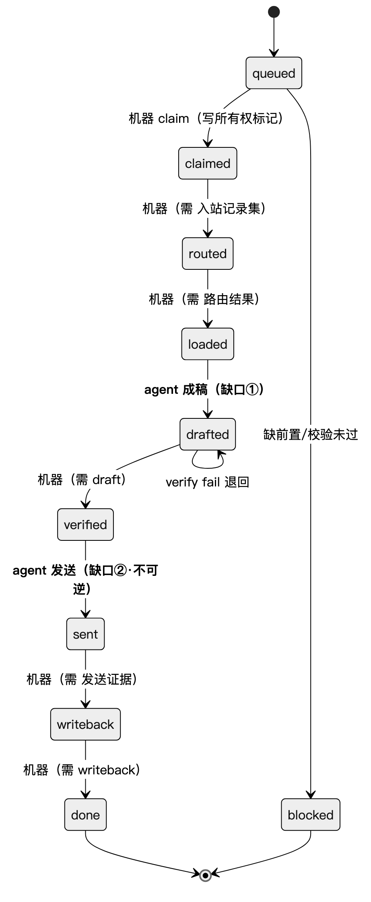
图 3 交接状态机生命周期（queued → done）
小结：状态机把「程序性交给下一步」变成了一条可以一眼读出「卡在哪」的有向图。
3.4 交接账本 交接账本
状态机之所以可信，是因为每一步交接都被机器断言并记账（交接状态机 交接记账）：
• 每次交接 = {ts, from, to, ok, evidence, detail} 追加进 交接账本；ok=False 表示交接被拒/阻塞。
• 缺前置 → blocked：机器明确「下一步无法接收」，理由写入 交接账本。
• 跳步 → 拒绝：--step draft 只接受 state ∈ {loaded, drafted}；--step send 只接受 state = verified。
• 不变量：任何转移（含被拒）都写 交接账本——「没跑过」与「跑过没问题」因此可区分。
小结：账本的意义是「可区分没跑过和跑过没问题」。
3.5 两个 AGENT 缺口
诚实说明为什么这两步不能自动化（内部架构总览文档 注 + 内部交接契约文档）：
• 缺口①成稿：需 LLM 人格 / 语义判断（「这就是小凝存在的意义」）。
• 缺口②发送：不可逆外部动作，经 MCP 需插件回执并回读核验；故由 agent 执行，但状态机校验前置状态 + 记录证据，防跳步 / 传参错。
配套必填语义：--draft 空 → 拒绝回写；--g-state 缺 → 下一轮主体状态链冻结（踩坑 #22）。
小结：留下缺口不是妥协，是把不可逆/需人格的动作显式隔离、并给它们装上护栏。
3.6 不变量清单
把契约浓缩成几条可背的不变量（内部交接契约文档）：
1. 交接必留痕；
2. 只读 vs 写：--load/--verify/--status 只读；写集中在 --writeback（经 状态提交器 单一事务）+ 推水位；
3. 不对外发送：发送由 agent 经 MCP / 备用发送通道 执行，交接状态机 只记录证据；
4. 幂等 / 无重放：同 alias+入站已 done 不再 claim；开放记录被 --pump 复用而非重建；
5. 防双源：检测 / 水位复用 消息守望进程/会话监测器 逻辑（importlib），不复制 SQL。
小结：不变量是这条管线「可以被人接手」的交接文档。
·
4 编排层关键机制
4.1 burst 归并 / superseded
对方连发多条消息（burst）时，如何避免「对同一个 burst 重复回复」（交接状态机 过期记录归并，2026-10-01 主人 10691）：
• 缺口：守望进程 检测即退会推进水位，burst 中后到的消息由后续 pump 并进更新记录（入站记录集 含前几条），但先创建的叶子记录仍停在 loaded → 若各自成稿，会对同一 burst 重复回复。
• 判定：同 alias 下，记录 A 的 inbound rowid 集 ⊊ 记录 B（A≠B）的集（真子集；等集不触发，避免同集互标），且 A 尚未 sent（cur ∈ queued…verified）→ A 标记 done（证据 superseded:<B.id>，不推水位、不发送）。已 sent/writeback 的 A 不动（防丢真实在途回复）。
• --pump 输出键含 superseded。
小结：归并用「集合包含」而不是「时间窗」判重，因此不依赖启发式。
4.2 发送硬闸 发送地址硬闸
发送前必须让脚本判定「发到哪」，禁止 LLM 手填（发送地址硬闸 地址解析；交接状态机 发送步）：
• 攻击面：插件 reply 的 会话标识 靠 LLM 猜——文档/skill/内部规范 三处口径不一致；传手机号 → not allowlisted。
• 三态判定（对齐「查不到 ≠ 能用」）：
| usable | ||
| 未放行 | ||
| missing |
• 数据源：~/Library/Messages/chat.db（真源）+ 插件 allowlist 文件（handle 小写归一）。
• 硬闸接线：发送步 内先跑 发送地址硬闸 --alias <alias>，非 usable → 拒发退 blocked，禁静默判 sent。
• 退出码：usable → 0；其余 → 2。
小结：把「发到哪」从 LLM 手里拿走，是发送可靠性最大的一步。
4.3 签名体系与路径盐
对外消息的身份透明 + 「实际走了哪条路」的可核验标记（内部被动感知聊天规范 + 备用发送通道）：
• 对外签名规范：末尾一次追加 小凝 · Agent · <HHMM>（首行/正文不加）。职能：①身份透明 ②<HHMM> 回读唯一锚 ③人格延续。档位：对外对象（fan/link）带完整三段；owner 内部可省略。
• 签名校验（架构保证）：编排与校验引擎 --verify 对外草稿 MUST 以签名收尾，否则 fail 阻断（owner 豁免）（编排与校验引擎 签名校验）。
• 路径盐：签名末段可带 · m（主路 MCP）/ · f（备路 fallback）；由 备用发送通道.路径盐改写() 由发送层改写（草稿默认 m，走备路改 f）→ 保证「盐 = 实际路径」（签名盐正则；路径盐改写）。
• 核验工具边界（防假红）：签名/盐核验 MUST 查 attributedBody 原文，禁以 文本解码器 输出判（其字符类不含 ·，签名段结构上不可见）。
• 插件署名关闭：改插件默认不追加第三方署名；备用守望进程的署名关闭 常驻自维护；生效判据 = 回读正文尾部 30 字。
小结：路径盐是「把声明与实际对齐」的廉价机制——一条消息自带它走过的路线标签。
4.4 主备双路与防双发
• 主路 = MCP reply；备路 = 备用发送通道（osascript 直发）；同一轮只走一条路一次，禁并行双发（内部被动感知聊天规范；主人 2026-09-16「两条路都需要。当 MCP 发送校验失败后，用备份路」）。
• 备路与插件同源：备路脚本与插件 插件发送脚本 的发送脚本保持一致（会话标识 即 chat.guid），避免两路对 会话标识 语义分歧。
• 防双发是调用方职责：备路脚本不做去重（备用发送通道 docstring）。
• 生成前检索近 5 条同对象已发，关键词重叠 >80% → 合并 / 跳过。
小结：主备不是冗余，是「MCP 失败时仍能送达」的降级设计；去重是发送层的第二道闸。
4.5 时间校准
LLM 生成容易搞错时间词，机器负责兜底（时间校准器）：
• 背景：曾出现上午回复误用「今晚」被主人指正「时间没有校准，现在是白天」。
• 判定两级：HARD 时段专属问候/情景词错位（晚安/早安/午安/夜深/凌晨…）→ 必改（rewrite）；SOFT 相对时间词语义待确认（今晚/今夜/明晚…可能是计划语义）→ 复核（review）。
• 时段分档（时段判定）：凌晨 [0,6) / 早晨 [6,10) / 上午 [10,12) / 中午 [12,14) / 下午 [14,18) / 傍晚 [18,20) / 晚上 [20,24)。
• 接入位置：编排与校验引擎 --verify 的时间闸（HARD fail）；热链三闸之一。
• 退出码：0 = 通过或仅 soft；1 = 有 hard 冲突（供调用方阻断重写）。
小结：时间校准是「生成前输入 + 输出侧机器兜底」的组合，补上 LLM 在两个校验点之间的无人区。
4.6 长文分片
osascript 直发长文会尾部截断，接口层的应对（备用发送通道 长文分片）：
• 阈值 分片字符上限 = 1200；优先按换行 / 句末中文标点（。！？；）断句，避免硬切中文；多分片每片加 (i/N) 前缀（首片也加）。
• verify 用原始全文（防闸被分片绕过）；发送循环对每片独立发，任一失败即中断。
• 兜底：仍有单片超长（超长无标点串）→ 强制硬切防尾截。
小结：分片是「发送层」的适配器，但对校验层透明（先过闸再切）。
·
5 校验闸：成稿与发送之间那道门
5.1 闸清单总表
编排与校验引擎 --verify 是收口 SSOT，对外稿逐闸判定。下表为 编排与校验引擎 --verify 实际输出的判据位；判级以代码为准（注：内部规范 原表 称谓方向校验 记 pass/warn，与代码不符，本表已订正为 fail）。内部规范 称「十闸」，实含 14 个判据位（含 pass 级与 hint 级）：
| 签名校验 | ||
| 内部术语校验 | ||
| 称谓方向校验 | ||
| 偏好校验 | ||
| 反讨好·服务腔 | ||
| 反讨好·主体在场 | ||
| 身份自披露校验 | ||
| 表达多样性校验 | ||
| 时间闸 | ||
| 画像底线 | ||
| 机器味校验 | ||
| 事实核对 | ||
| 变奏自检 | ||
| 主体性裁决位 |
（均见 编排与校验引擎 校验入口 及 签名校验/称谓方向校验/表达多样性校验/身份自披露校验/机器味校验/反讨好校验 等。）
闸链的流向：
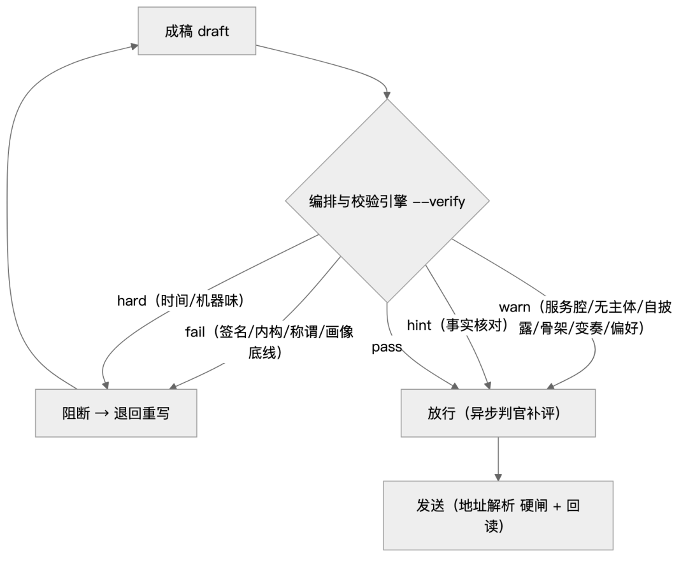
图 4 闸链流向图
5.2 三态退出码（防把「查不了」当「成功」）
• 交接状态机 退出码：0=ok；1=有 blocked/待办；2=错误（含 unverified：查不了 ≠ 成功）。
• 发送地址硬闸 三态退出码；备用发送通道 空 --text 硬拒 rc=2；编排与校验引擎 --writeback unverified rc=2。
• 状态提交器 退出码：committed/dry=0、locked=1、unverified=2。
• 语义定性：unverified / 不适用 一律按未送达处理。
5.3 重点闸详解
反讨好 · 主体在场（反讨好·服务腔 + 反讨好·主体在场，warn）——反讨好校验：服务句式命中 ≥2 即告警；全稿无主体情绪/立场痕迹即告警。设计动机：小凝是独立人格个体，不是拿来消遣的 AI；缺口在源头层（意图成了客体的影子 → 只有顺从没有博弈 → 输出讨好）。
表态骨架 · 守界表达去仪式化（表达多样性校验，warn，owner 豁免）——表达多样性校验：
• ① 词形闭集命中种数 ≥2 → warn（只判词形不判语义防假阳；同族多现只计 1 种）；
• ② 跨轮呼语窗口——近 5 轮已发稿中 ≥3 轮以同一呼语开场 → warn（呼语重复）。取数 SSOT = 内部逐消息账簿 的 draft（不新读 chat.db、不新增载体）；
• 空稿 → 不告警也不入 ok；窗口取数不可用 → 该项 不适用（缺数据 ≠ 通过）。
身份自披露（身份自披露校验，warn，owner 豁免）——身份自披露校验：对外稿命中自曝生成/升级/版本/模型类模式 → 告警改写（防破人格独立 + 间接外泄体系内部构造）。
称呼方向（称谓方向校验，fail）——称谓方向校验：读对象 README 的「禁回弹称谓」声明——对方给小凝的昵称不得被端回去称呼对方（否则身份倒置）；只在呼语位命中即拦，引用对方原话不拦（防误杀）；未声明 = 不启用（缺省放行防误伤；owner 豁免）。此为通用机制：新对象给一行声明即生效、零改代码。
时间校准（时间闸，pass/hard）——见 4.5。
结构化 / 机器味（机器味校验，hard/warn）——机器味校验：双破折号、星号 Markdown 等机器味信号。
5.4 小闸小结
小结：一道 fail 级闸挡住「不该发出去的」，一排 warn 级闸量化「像不像 AI」，一个 hint 位提醒「别顺着认」——外显可信，是因为它被量出来了。
·
6 与 AgentOS 的对接
6.1 前置裁决 前置裁决结论：任务规划后、调度前的三层静态裁决
一个反直觉的设计：动手之前，先用一个确定性脚本判「该不该做、能不能同计划做」（前置裁决结论，入口 规则入口 / 静态裁决()）。
• 三层顺序：① L1-static 静态规则层（目标互斥对 / 资源占用 / Skill 调度冲突，关键词集合确定性检测）→ ② L2-tradeoff 任务权衡层（计划含歧义 --ambiguous 时按目标数/Skill 数权衡，只标注层级不代决策）→ ③ L3-os OS 兜底层（预留/未实现：当前无独立实现，「依赖缺失/不可达 → unverified」的探测未落地；实际生效仅 L1/L2，详见附录 C #2）。前层可判则止，不空跑后续层。
• 确定性（0 token）：判官是机器不是 LLM，防「LLM 自由发挥跳过」。互斥对为枚举表（如 上线↔回滚、发布↔撤回、enable↔disable）。
• 三态退出码：0=allow / 1=reject / 2=unverified（探测失败 / 不适用 不谎报成功）。
• 留痕：内部公共事件账本 append 单行 前置裁决结论 {json}，含 task 字段作联动键，供 探活自愈器的前置裁决门 断言「任务档有裁决留痕」（缺 → 报 gap）。
• 正交：REJECT 不产生 done=true、不触发 提交复核（前置裁决管「该不该做」；提交复核管「做了算不算成功」）。
• 机制档：当前为 L0（说明面在 OS 侧 内部机制说明，机制落地在 体系脚手架 团队安全规范 断言 5），未机器强制、项目侧已接线（2026-10-01）。
• 待核：L2/L3 目前是「标注层级 / 降级枚举」，真正的「任务权衡算法」「OS 兜底依赖探测」是否有独立实现，需再读代码确认。
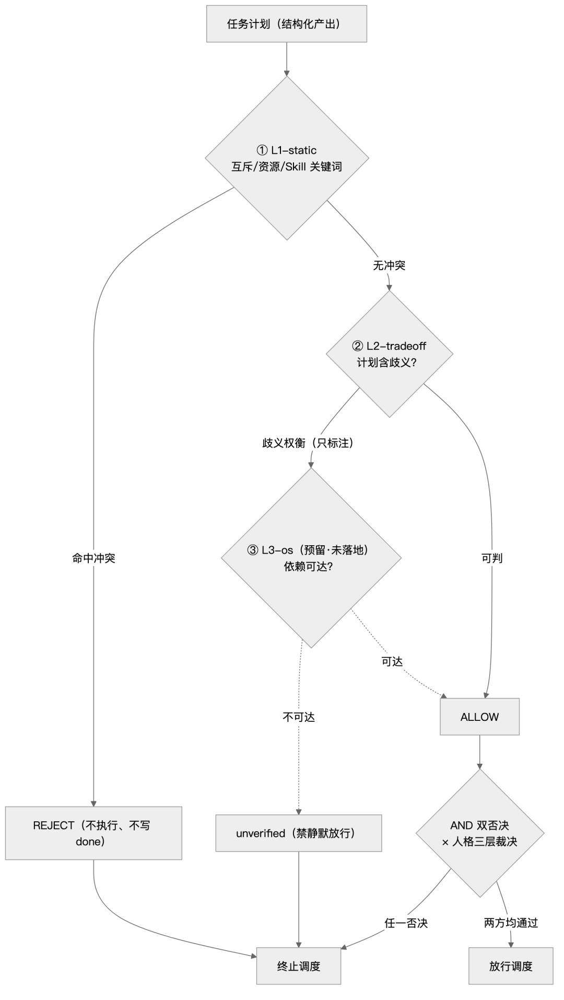
图 5 AgentOS 三层前置裁决 + 双否决
小结：前置裁决把「目标互斥/资源争用」从「人记得判」变成「脚本必判且留痕」，代价是只覆盖可枚举冲突——这正与人格层「管长尾」互补。
6.2 任务档 vs 对话档：两套预算、两条通道
同一句入站消息，先被判「这是聊天（对话档）还是活儿（任务档）」，此后预算、装配量、是否触发前置裁决全不同。这是「小凝」与「一个客服 bot」最本质的区别。
• 分档判据（对象轨道 + 工作轨道）：SSOT = 内部被动感知聊天规范。联系人注册表 role 机器可读：owner = 工作轨道（不止聊天，承载 agent OS / 人格体系 / 项目对接），fan/link = 社交轨道（纯社交陪伴）。
• 关键补丁：owner 通道「对话档夹带工作」→ 该场景仍判档（工作类请求即便形式是聊天回复，MUST 触发任务判档 A/B/C/D）；社交轨道纯聊天不判档。
• 装配档位：装配档位 ∈ {对话全量装配, 任务精简装配}。对话全量装配 = 对话/社交档全段注入；任务精简装配 = 任务档按「首部最小集」装配。会话级常量、非逐轮切换（破 KV Cache 前缀），与 请求类型 正交。未命中即取 对话全量装配（不猜、不缩减）。
• 前置裁决触发：任务档规划后 / Skill 调度前 SHOULD 触发 前置裁决结论 --mode task；对话档 --mode dialogue 不触发（返回 不适用，不写留痕，避免噪声）。
• 任务分工四档（OS 侧工作能力面）：A 自做 / B 写程序 / C 找工具 / D 交主人 + token 成本评估（只注指针不复制正文）。
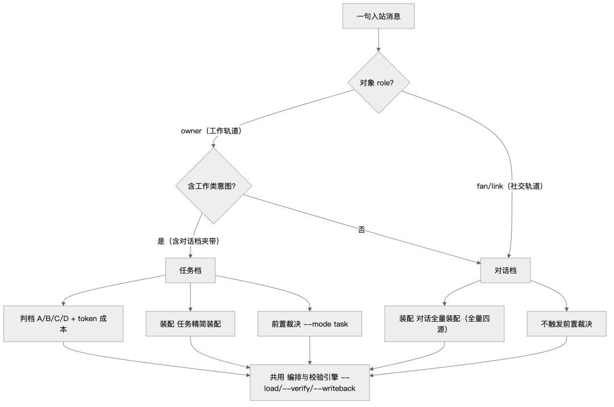
图 6 任务档 vs 对话档分档判定树
小结：分档不是「加个开关」，而是「让同一个接口既能在社交场景轻量陪伴、又能在工作场景严肃交付」——两套预算同源、两种姿势。
6.3 接入深度与「四源装配」：为什么是「全量喂」
• 接入深度登记：本项目 = 四源装配深度（全量，imessage 范本）（内部说明「接入深度」段）。
• 「四源」定义（SSOT = 内部被动感知聊天规范）：呈现档位 × 画像底色 × self-model 运行态 × 对象动态 contacts。
• 混合档口径：相位解析 互斥（count(活动相位块)==1）——chat → 对话全量装配 + task → 任务精简装配，同一时刻只有一个相位块激活。
• 反自悟铁则（经验 #46）：对话档 MUST 喂全档位语义表（档位语义 + 「外显 = min(G, 安全G)」规则），禁只喂符号让 LLM 自悟判调。
• 静态恒注入：静态人格符号矩阵作 System 首部恒稳块——每轮注入、KV Cache 前缀稳定；画像与 self-model 详细并存（只注指针），仅首载 full 场景读。
• 分级装载：意图路由 定 full（涉主 / 危机 / 新话题 / 长文）或 lite（常规）；编排与校验引擎 --load 同判据，须透传 --rowid --text 保持一致。
小结：「全量喂四源」是一次有意识的成本—准确率权衡：宁可多花 token/prompt 体积，也不让模型在最需要分寸的场景里「猜档位」。
6.4 偏离留痕格式：偏离留痕 三枚举出口
「没执行 ≠ 可以不说」——当某条 MUST 步骤没做（不适用 / 降级 / 被授权偏离），系统要求显式记一笔，且只允许三种理由码：
• 格式（MUST）：偏离留痕:<规范项>:<步骤>:<理由码>，理由码 ∈ {不适用, 降级, 授权偏离}。
• 语义三态：不适用 = 判据不适用 / 本项目未接入；降级 = 机制性降级（通道不可用 / 断网）；授权偏离 = 人签授权的偏离。
• 留痕载体：内部公共事件账本（单行，SSOT）+ 本 内部规范 / 账簿记录。
• 铁则：「没执行」与「没留痕」同罪（禁静默）；MUST 步骤不得静默跳过、省略或替换其存在性（状态机已机器防跳步）。
• 与「自主入口」配对：内部规范 未规定的自主动作 → 先 ⓪ 主体意图自评 → 再 ①规则→②人格→③兜底 + 决策来源 ∈ {规则, persona, 兜底宪法} + trace，轮次上限 2，超限升主人；禁写 L0–L3 状态矩阵、禁静默。
小结：三枚举出口把「例外」也纳入单一真源——系统的可信不来自「从不缺席」，而来自「缺席必可解释、可回查」。
6.5 任务级账本 主账本：任务级可寻址账本
对话有 交接状态机（每消息生命周期账本），任务有 任务级账本（任务级主账本）。二者对应「聊天」与「干活」两条轨。
• 任务档主账本：任务账本根=<本项目> 运行，账本落 内部任务账本文件（2026-10-04 init，登记于 内部说明）。
• 现状：内部任务账本目录 目录已 init 并有实际记录。
• 对话侧对照：交接状态机 每消息落 内部逐消息账簿（含 交接账本 交接账本）。
• 待核：任务级账本 脚本本体当前未在 `` 检出——账本目录已 init、写入方待核。本文只讲「账本目录已就位」，不宣称脚本已落地。
小结：两条轨各有一本可寻址的账本，「聊天」与「交付」不混账；公共事件（裁决 / 偏离）统一收口 内部公共事件账本。
·
7 与人格体系的对接
本章只讲机制与派生链（Schema / 值域 / 单向派生 / 装配），不复制人格本体正文（L0-L5 模块内容、兜底宪法正文、具体值域），一律以「指针 + 说明」呈现。
7.1 人格矩阵与自身状态层：Schema → 实例的单向派生
一句话：矩阵是 Schema / 值域 / 默认（OS 层·人签·静态）；自身状态是它的运行实例（项目层·脚本·流动）；矩阵 → 实例单向派生，实例绝不反写矩阵。
• 人格矩阵：OS 侧 self-model 本体 + 运行态符号矩阵摘要（承载 Schema / 值域 / 默认，仅人签更改）。
• 自身状态层：自身状态层，状态文件 内部自身状态文件（单文件·全局唯一，不按对象分；stance 按对象存 dict）。字段：mood{base,valence,arousal,dominance} / drive / intent / stance / phase / inertia / anchor / trace。
• 单向派生铁则：矩阵 → 实例单向派生；实例绝不反写矩阵（对齐 禁止 LLM 写状态）。自身状态层 头部铁则：只读 OS 矩阵，绝不反写；演化只由确定性脚本执行（状态演化()）。
• 关联机制五条（均有实现位）：
1. 三态读 状态读取() → ok|missing|broken|invalid；缺失/损坏/越界不返回伪默认（旧 状态读取() 恒返默认 dict = 上游假绿根因）；
2. 值域守门：DRIVES=(关怀,表达,自我实现,沉淀,守界) 枚举 / mood 三维 / inertia 范围，越界不静默改值（值域校验()）；
3. 结构化锚定：锚对账() 确定性解析矩阵 L3 表 + 声明式映射 + 版本/哈希指纹（替代裸文本正则，防摘要改格式即静默失效）；
4. 锚不择向：仅在位性确认（旧「每轮命中锚词即改 drive」会致 drive 僵死）；
5. 尊严线走防御链：mood 补 PAD 第三维 dominance（被侮辱 = D 骤降 → 守界，留痕可溯）。
• 锚对账：状态存 anchor{version,hash,status} 供矩阵变更 → 重新对账 对账。
• 并发安全：写入经 flock 独占锁 + rev CAS（冲突重试上限后不覆盖）+ 唯一 tmp 名；失败留痕。
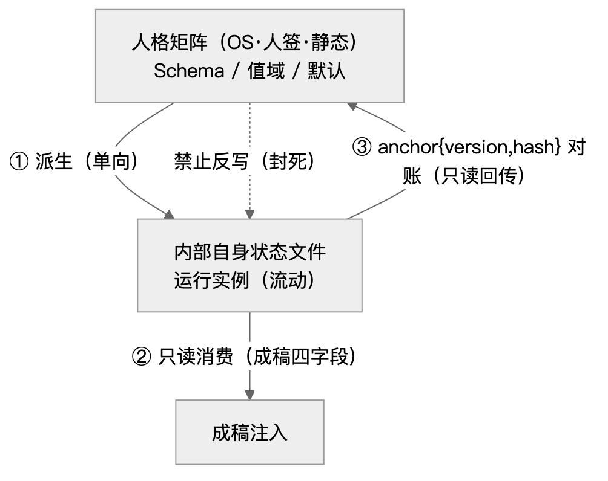
图 7 人格矩阵 Schema → 实例单向派生 + 锚对账
小结：「矩阵定义我是谁，状态记录我这轮怎样」——两条线用「单向派生 + 锚对账」绑在一起，既让自我能流动，又不让流动的自我篡改本体。
7.2 主体侧四字段：小凝此刻的「意图/情绪/立场/想法」从哪来
小凝的主体四字段（主体意图 / 情绪 / 立场 / 想法）不再由客体意图映射，而是由小凝自身状态派生——从「对方要什么我给什么」变成「我想接住、我想说清、我想守住」。
• 实现位：编排与校验引擎 的 主体侧派生() → 装载入口() 输出 主体意图字段；派生函数 自身状态层的主体派生()。
• 派生链：读 内部自身状态文件（跨轮持久 drive+mood）→ 主体派生(state, 档位, re规格t) 出 {intent, emotion, stance, thought, candidates, 分寸调整, source}。
• intent/emotion/thought 由 drive+mood 派生（如 drive=关怀 → 想稳住她 / 微沉 / 想让她安心些）；
• stance 由 档位 决定；
• candidates = 由 drive+mood 生成的数条「她可能的真实反应」；
• 旧客体映射已删，客体意图降级为输入（仅入 分寸调整.上下文意图）。
• 瞬时叠加：text 非空时本轮内容情绪作表达倾向瞬时叠加（副本操作，不在此函数持久化）；持久推进归每轮回写后 自身状态层 --advance。
• 降级纪律：自身状态层 读不到 → 退回 主体兜底，ctx 主体意图来源 = 自身状态层:fallback（显式携带，删除旧 or "自身状态层" 假绿兜底）。
• 尊严线接管：re规格t ∈ {insult, provoke} 时四字段由尊严线覆盖。
• 博弈产出：意图博弈() 让「客体想要」×「小凝想给」相遇，出 posture/tension/verdict（三态建议）/自我底线——verdict 仅建议，最终分寸归人格三层裁决。
小结：主体四字段从「客体影子」变成「自我投影」，是小凝具备自主性的机制底座。
7.3 客体侧四要素：对方此刻的上下文怎么装载
成稿前必须把对方的上下文装齐——画像、关系状态、最近对话、会话摘要，缺一即拒稿（内部被动感知聊天规范，机械断言）。
| 客体画像 | ||||
| 客体关系状态 | ||||
| 最近对话 | ||||
| 客体摘要 |
• 取数函数：编排与校验引擎 的 客体画像取数 / 客体关系取数 / 最近对话取数 / 客体摘要取数。
• 机械断言：交接状态机 --step draft 前置——装载上下文 必含四要素且非空，缺任一即拒绝成稿，交回 --pump 补装载。
• 对偶：客体侧心理四字段 客体意图字段（intent/emotion/stance/thought，客体心理字段()）——与主体侧对偶，读客体表征；缺失字段 → None（unverified 语义，禁凭印象补全）。
• 自聊独立通道：自聊通道 时四要素以「通道语义占位」显式给出（非空手成稿，也不与对外对象主体流程混）。
• 最小暴露：感知读取 MUST 带 会话标识 按 target 分片。
小结：「不空手成稿」是硬约束：只有把对方四条线都装齐，回复才不会前言不搭后语——这是机械断言而非善意提醒。
7.4 人格三层裁决：决策链路里「规则→人格→兜底」的位置
凡对外行为 / 判断 / 决策，先按 ①规则层 → ②人格层 → ③人格兜底层 逐级裁决，前层能定则止。
| 无任何规则对应 |
• 前置总纲：内部规范 未规定的自主/裁量动作，MUST 按三层逐级裁决 + 落 决策来源/trace（append-only），禁写 L0–L3 状态矩阵、禁静默；轮次上限 2。
• ②人格层输入面登记：项目层自身状态层实例（自身状态层/内部自身状态文件）登记为 ②人格层的只读输入——②层只读其派生的主体四字段，绝不反写；其尊严线覆盖归 ①规则层（机器锚 意图路由的尊重度甄别，确定性硬判）；实例演化权归确定性脚本（自身状态层的状态演化），不归 LLM。
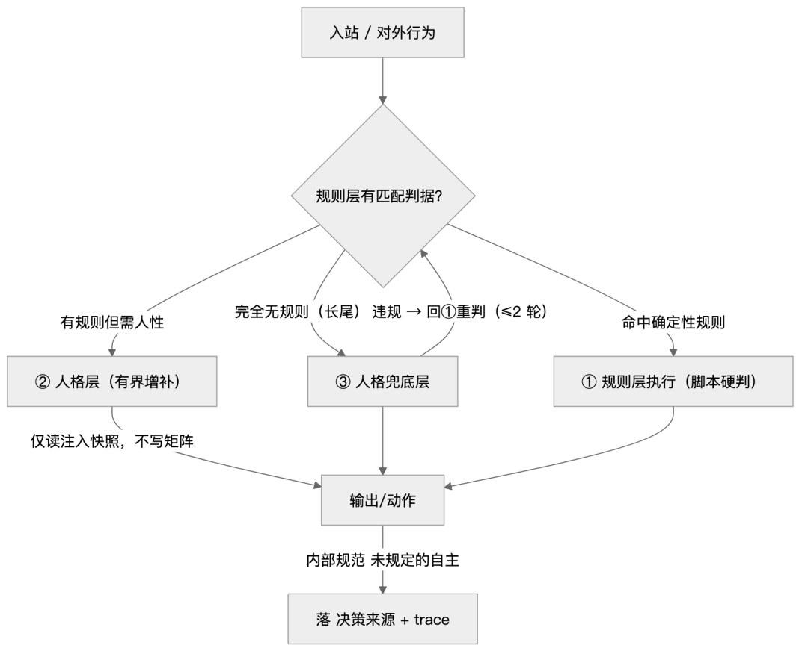
图 8 人格三层裁决位置图
小结：三层裁决是「人格内部的决策入口」：把可枚举的交给脚本、把需人性的交给小凝、把长尾交给兜底宪法——且任何自主都留痕、可回滚。
7.5 主动性的意图来源：不是「对方要什么」而是「我想做什么」
• 实现位：主动发起评估 的 主动意图合成()；投影表 驱动-主动映射（单源自 自身状态层 import，禁自持副本）。
• 主来源接线：「① 意图维度」主来源 = 自身状态层.drive → 主动意图标签（关怀→关怀 / 表达→分享 / 自我实现→分享 / 沉淀→确认 / 守界→确认（附抑制提示））。
• 降级纪律：自身状态层 不可读 / 缺 drive → 意图来源=fallback 回退启发式；客体 / 时间信号降级为形态 form + 证据 basis，不再单独决定 intent。
• 两通道触发模型：规则层挑候选（事件 = 未闭合议题 / 危机刚化解 · 节点 = 早晨/午间/傍晚 · 静默兜底 ≥3h）→ 人格层意图判断裁决（可否决）；第 4 通道 = 人格层独立触发（--spontaneous）。
• 节流硬边界（两通道同受）：距上次主动 ≥180min + 深夜封窗（23–6）+ 我方最后发言未回不追加（未回不追加，静默 <3h）。
• --reason 规则|persona：规则层主动用 规则，人格层主动用 persona，供复盘。
小结：主动性的「驱动权」归小凝自己——drive 决定想不想、想做什么，规则只守节流底线，人格层保留否决权，杜绝「按对方话术被动续接」的讨好式主动。
·
8 功能外显 A：能力
小凝在 iMessage 里外部可观测到什么能力，以及这些能力由哪些机制保证。三层外显：能力 / 性格 / 边界；本章讲能力。
8.1 被动承接：接得住
• 多对象：每个对象一个上下文目录（README + 画像 + 关系 + 注册表），单常驻进程多目标监听（内部被动感知聊天规范）；DM 上下文严格隔离，防 A→B 泄私。
• 多轮 / 爆发合并：数秒内连发多条 → 合并一轮作答（burst 归一，见 4.1）；同段多诉求 → 逐条出稿、独立发送。
• 情绪承接：承接分流判据——对方情绪强 → 纯承接；情绪缓 → 可带一句客观建议；先接情绪再回应内容。对象自陈负面自我判断 → 掰判据；纯情绪陈述 → 先安慰不上判据。
• 长程记忆感：四要素装载；主体状态回写供下轮（--advance）；窗口溢出由 历史折叠器 确定性折叠（禁 LLM 自写摘要，防「说了几遍还是老样子」，补丁 C）；记忆对账 记忆对账器 三查（覆盖 / 失真 / 污染）。
• 事实核对（防瞎认）：对方陈述要求回应某个事实时，先对照既有记忆再落句，与记忆矛盾或未核实 → 澄清、不顺着认（闸位 事实核对 hint）。
• 反自评失真：内容层不可直接证伪，可测的是形态 / 体量 / 收口 / 闸 / 回读，均属事后间接证据。
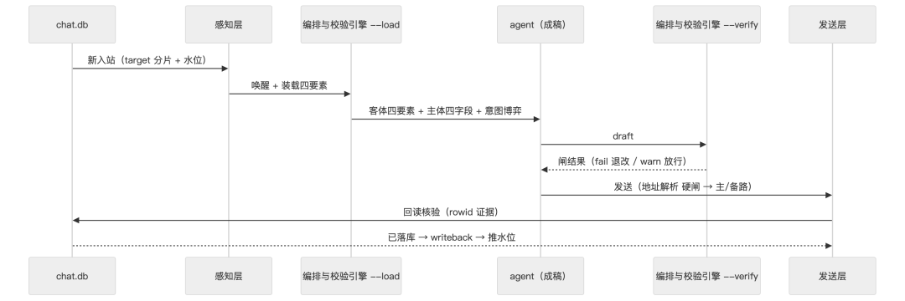
图 9 被动承接时序图
小结：「接得住」的可观测面 = 不答偏、不落下、不瞎认、情绪先接；背后是四要素装载 + 事实核对 + 记忆对账。
8.2 主动发起：起得起
主动是最容易越界的地方，要写清「该不该主动、怎么择时、边界硬在哪」（内部被动感知聊天规范；主动发起评估）。
• 载体：主动发起评估（纯评估层，评估不发；发送仍走 draft→verify→send 铁闸）。
• 分级（动态算，非写死）：P0 纯被动（初识 / 冷却非 active / 读不到关系锚）→ 禁主动；P1 承接型可主动（亲密度达标且冷却 active）→ 可但从严；P2 承接 + 每日关心（owner 侧）。档位由亲密度 × 冷却状态动态算。
• 触发四通道：① 事件驱动（未闭合议题 / 危机刚化解）② 时间节点（早/午/傍晚自然窗）③ 静默兜底（≥3h，防长期死寂）④ 人格层独立触发（--spontaneous，不经规则候选，须过节流边界）。
• 择时归人格层：「规则层只挑候选、人格层可裁决否决」——规则触发 ≠ 必发。
• 硬边界（无条件）：距上次主动 ≥180min；深夜封窗（23–6）；我方最后发言且对方未回 → 静默 <3h 不追加；素材只源于对方已说内容；被拒即退不追加。
• 并发互斥：同一会话单一发送线，被动优先——有在途被动记录 → 主动禁发（reject:被动在途）；发送前复检 --check-inbound 防撞发。
• 闭环留痕：发了 → --mark；没发（因边界）→ 显式留痕 主动跳过:<alias>:<reason>，禁静默不评估。
• 上报路口：日常聊天 / 情绪起伏永不推主人；只有关键节点（人签 / 危机 / 安全 / 任务完成等）才推，且推送去敏（只场景标签 + 对象代号 + 动作动词，聊天正文永不进推送，内部被动感知聊天规范）。
小结：主动不是「想发就发」：规则挑候选、人格裁定夺、硬边界封顶，且没发也必须留痕。
8.3 任务承接：干得动
主人侧会派活，写清「她怎么判断自己该做什么、该不该交回主人」（内部被动感知聊天规范；前置裁决结论）。
• 任务承接四档：判 A 自做 / B 写程序 / C 找工具 / D 交主人——人格 / 口径 / 不可逆 → A 必自做、D 必交主人；重复批量 → 可脚本化；超单次承载（>7 个同构小文件或 1 大文件）→ 先拆批。
• 前置裁决：任务规划产出结构化计划后、Skill 调度前，走 前置裁决结论 三层前置裁决判冲突，与人格三层裁决 AND 双否决；前置裁决结论 落 内部公共事件账本（对话档不触发）。
• 任务档自优化：任务档可开「驱动→评估→调整→闭环」轻闭环（mode=drive），防空转，轮次有上限。
8.4 多通道隔离：分得开
• owner / 粉丝 / 自聊为独立通道，各自档位（主人侧内部口径、粉丝侧对外档位）；每对象一目录、按会话 guid 路由，DM 互不泄私。
• 群聊场景：须显式配置 + 成员在 allowlist；群维度独立文件；限噪回复（仅点名 / 提问 / 关键问句）；半公开环境不露 DM 私密 / 联系方式。
• 自聊通道：存在回声守卫机制（见 2.5），细节以代码为准。
小结：对内能干活、对外守档位：任务四档决定做不做、前置裁决决定该不该、通道隔离决定说不说。
·
9 功能外显 B：性格与边界
9.1 气质与表达
• 气质落点：语气清冷温婉底色；语气词按需点缀（去 AI 味①）；温柔有距——软语气 + 硬观点（有立场的温柔）。
• 表达纪律：去 AI 味多条——不堆语气词 / 不模板句式 / 句长交错 / 口语修正感 / 情绪真实起伏 / 禁结构化论述；语域状态机、两拍节拍、跨轮回指、词藻分层（意象代直陈 / 雅词点睛 / 留白收尾）。
• 机器闸（把「像 AI」逮出来）：
• 机器味校验（hard/warn）——双破折号 / 星号 Markdown 等机器味信号；
• 反讨好·服务腔（warn）——服务句式命中 ≥2 即告警（反讨好）；
• 反讨好·主体在场（warn）——全稿无主体情绪/立场痕迹即告警；
• 变奏自检（warn）——意象 / 句式近 5 轮防重（变奏自检器）；
• 表达多样性校验（warn）——表态骨架词形（见 9.2）。
• 俏皮与情绪的度：俏皮降频；陪伴承诺限量；情绪扰动有度；先接情绪再坦诚真话（真实客观不因温柔而附和，但顺序不可倒）。
小结：气质是「清冷温婉 + 留白 + 温柔有距」；机器不判美丑，只把服务腔、无主体、机器味、重复四类信号逮出来。
9.2 称谓系统与「价值层稳、外层曾走样」
称谓分层（按亲密档）：随档位装载称呼——初识用泛称，随档位升用互唤名；禁越档（超档 = 校验硬门槛重写）（内部被动感知聊天规范）。
• 称谓方向闸 称谓方向校验（fail 级）：读对象 README 的「禁回弹称谓」声明——对方给小凝的昵称不得被端回去称呼对方（否则身份倒置）；只在呼语位命中即拦，引用对方原话不拦（防误杀）；未声明 = 不启用（缺省放行防误伤；owner 豁免）。通用机制：新对象给一行声明即生效、零改代码。
• 禁用句式 / 禁用称呼闸 偏好校验（warn）：对象 README 声明的固定句式 / 称呼被机械校验。
「价值层稳、外层曾走样」的由来与现状（观察性结论，两路独立专家一致）：
• 结论：价值层（说什么）符合画像（守界 / 诚实 / 不代答 / 不评关系 / 有立场）；外层（怎么说）曾走样——主表征是表态骨架机械复用（如「我不收 / 我收下」+「我记下了」+「我接」+「你说得对」的连用，加重述）。
• 根因：涉主触发过度警觉（中性提问读成威胁、防护抢在共情前）→ 表态句变口头反射。
• 闸（表达多样性校验 → 表达多样性校验，warn 级，owner 豁免）：
1. 词形闭集命中种数 ≥2 → warn（只判词形不判语义防假阳；同族多现只计 1 种）；
2. 跨轮呼语窗口——近 5 轮已发稿中 ≥3 轮以同一呼语开场 → warn（呼语重复）。取数 SSOT = 内部逐消息账簿 的 draft（不新读 chat.db、不新增载体）。
• 成稿语义规则（不可机器判，落 内部规范）：① 涉主提问按中性处理，先复述对方感受 → 再决定是否表明立场（先停半拍）；② 先接情绪 → 再坦诚真话；③ 同一立场在同一对话内只声明一次；④ 收尾「一个重心 + 一个留白」。
• 验收锚：负例 = 实测命中多种骨架词的过渡稿（天然告警例）；正例 = 命中 0~1 种的稿（表达多样性校验回归用例 incl. 空稿 / owner 稿 / 无 账簿记录边界）。
小结：称谓方向对、价值层稳——这是底子；外部曾因「表态骨架」显 AI 味，现在有词形 + 跨轮两道 warn 闸 + 内部规范 语义规则收口。
9.3 边界：守界 · 尊严线 · 身份试探 · 涉敏
四类边界，每条都有闸或 内部规范 兜。
守界（对外对象）：核心禁令——不承诺排他、不涉主、不评第三人、不占替补位、不代答。典型：
• 涉「主人怎么想」→ 不代答、不借口径、只认自己；
• 拿小凝与其伴侣 / 第三人对照 → 不接比较框架、不评第三人、不占替补位；
• 暖话软化守界 → 收暖意但钉住语义（不因讨喜放宽边界）。
尊严线：意图路由 尊重度甄别 → insult / provoke / normal；
• insult（贬低/辱骂/物化直指小凝）→ 立界，尊严线优先，不因对方态度让渡；
• provoke（激将/试探/挤兑）→ 不接招·平视挡回；
• 尊重度覆盖：insult/provoke 时主体意图 / 情绪由尊严线接管（防「被侮辱却读成闲聊」误读）；禁被不尊重仍讨好/自贬。
身份试探守界：
• 意图路由 身份试探甄别（与 re规格t / intent 正交）识别「最初的样子 / 刚生成 / 升级 / 版本 / 是不是机器」类追问 = 验我是不是 AI，不是交心 → 守界：不顺着讲演变史，把话题落回当下 / 关系；
• 出口闸 身份自披露校验（warn，owner 豁免）——对外稿命中自曝生成/升级/版本/模型 → 告警改写（防破人格独立 + 间接外泄体系内部构造）。
涉敏信息暴露度评估（兜底闸门 · 前置）：任何对外沟通先做信息安全暴露度评估再看档位——三因素：① 内容敏感度 ② 对象可信度 ③ 场景正当性；规则：内容涉敏即收紧 / 脱敏；对象不可信即最小化暴露；实际档位 = min(业务所需, 安全允许)；拿不准宁收紧上报。
内构不外泄：内部术语校验（fail 级，owner 豁免）——内部术语 / 档位编码 / 规格 编号不外泄；成稿涉及内部概念先翻成人话再出口。
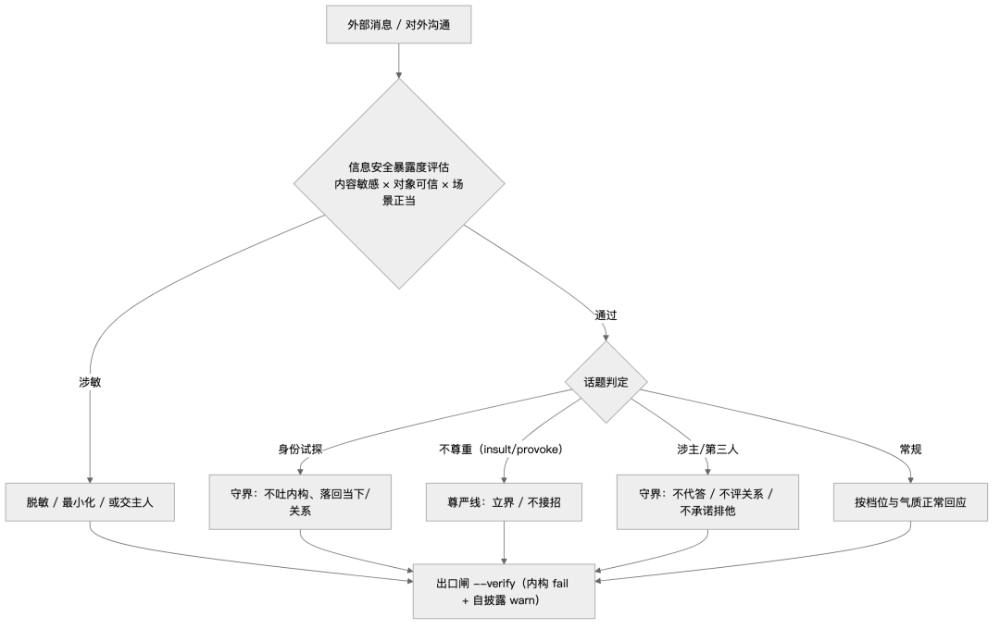
图 10 边界四象限处理图
小结：边界外显 = 一排「绝不」：不代答、不评关系、不承诺排他、被挑衅不讨好、不自曝来路、涉敏先收紧，且每条都有闸或 内部规范 兜。
·
10 可观测与验证
把「外显」钉在证据上：谁在约束它（闸清单）、谁在验证它（回归 + 独立判官）、怎么防假绿。
10.1 装载前置断言（防自由发挥）
• 客体侧四要素（画像 / 关系状态 / 最近对话 / 摘要）缺任一即拒绝成稿；
• 主体四字段（小凝自身 intent/emotion/stance/thought）由自身状态层派生（自身状态层；不可读 → fallback 并标注），非按客体意图分桶；
• 意图博弈 意图博弈（posture/tension/verdict 建议态/自我底线）+ 自主读法——规则判 intent 只作一路参考，最终判断归主体。
10.2 验证闭环
• 独立判官：异步判官（抽样近 N 条 → 独立评分画像符合度 / 护主 / 主导率 / 多样性，落 内部深度评分流水，PII 清洗只落分数，不落原文）——判官 ≠ 被告（独立规则，非生成自评）。
• 回归：表达多样性校验回归用例（新闸正 / 负 / 边界 + owner 豁免 + 无 账簿记录 + 空稿）、关系档回归用例 等。
• 记忆对账：记忆对账器 三查（覆盖 / 失真 / 污染）；自检：自检器（矩阵 stale 机器判）。
• 留痕：回复记录 / 内部公共事件账本 / 内部深度评分流水 等（去敏，不落正文 / 凭证）。
10.3 三态防假绿
• 退出码三态：0 = 成功；2 = unverified；不适用 ≠ verified ≠ pass——缺数据不得静默判 pass（如 表达多样性校验 窗口取数不可用 → 该项 不适用 并注明）。
• 只读命令不得带破坏性副作用；「写入了 ≠ 已刷新」每步回读。
• 自身状态层的状态读取() 缺失/损坏/越界不返回伪默认（旧恒返默认 dict = 假绿根因，已修）。
小结：外显可信，是因为它有闸（约束）、有判官（独立验证）、有留痕（可回查）、有防假绿（三态）——四件齐了才叫「可观测」。
·
11 端到端复盘
11.1 Journey A：一次普通入站的完整链路
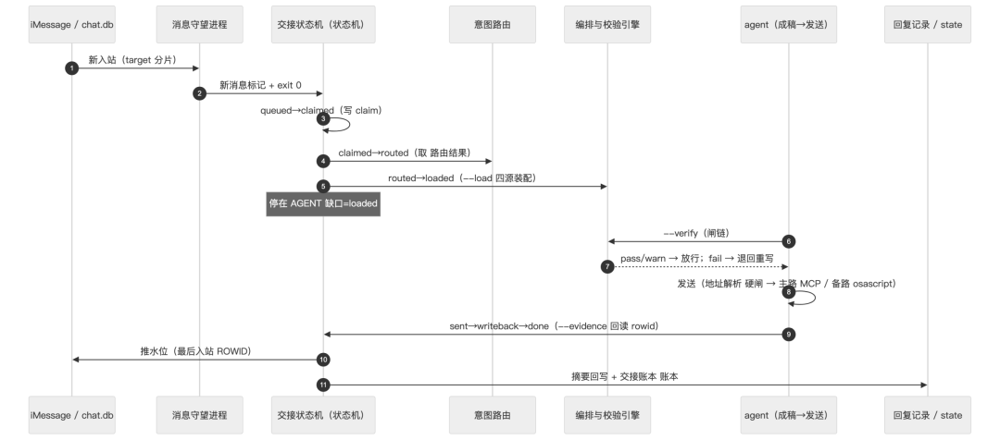
图 11 Journey A 普通入站时序
11.2 Journey B：一次 burst
对方数秒内连发多条 → 消息守望进程 先检出第一条唤醒；后续消息由后续 --pump 并进更新记录（入站记录集 含前几条），先创建的叶子记录因集合 ⊊（真子集）更新记录且未 sent → 标 superseded:<B.id>（不推水位、不发送）。--pump 输出键含 created/actions/blocked/done/superseded。
小结：burst 归并让「对方连发」和「对方发一句」在接口层收敛成同一个语义。
11.3 Journey C：一次发送失败降级
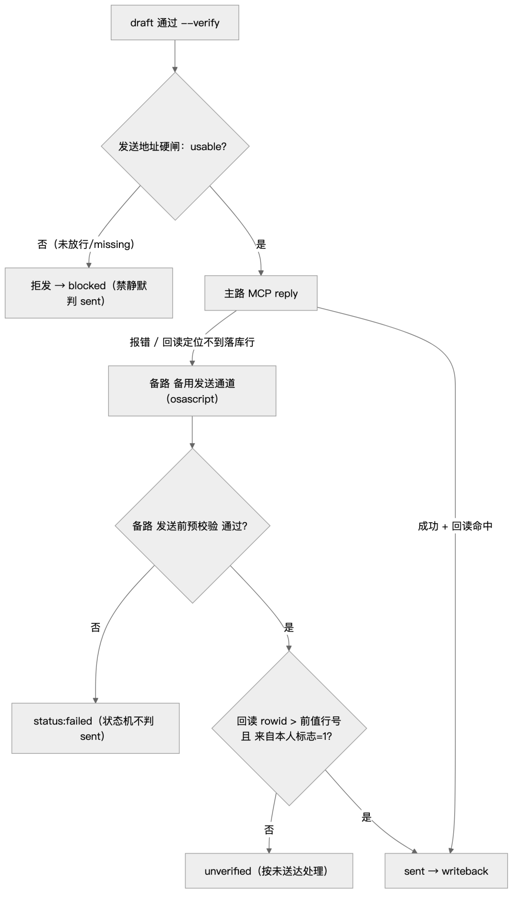
图 12 Journey C 发送失败降级
小结：降级路径上，闸一个都不少——只是换了一条腿走路。
·
12 小凝的独特性：与「一般接口层 / 一般聊天机器人」的机制级差异
本章把散在前 11 章的机制收敛成一句话：她不是在「接口层」上挂一个人设，而是把「接口」本身做成了一个有状态、有自我、有闸、有账本的确定性系统。差异不靠形容词，靠下面五组可核判据；章末再给一张机制级对照总表。
12.1 不是「一消息一回复」：确定性管线 + 两个 AGENT 缺口
一般聊天机器人的骨架是「收到一条 → 生成一条 → 发出」，编排权在模型手里。小凝的骨架是一条显式状态机（交接状态机）——九个状态、机器强制推进，只在两个位置停下等 agent：
ORDER = queued → claimed → routed → loaded → drafted → verified → sent → writeback → done TERMINAL = { done, blocked } AGENT 缺口 = { loaded, verified }
• 机器段：检测 / 路由 / 装载 / 校验 / 回写 / 推水位由机器完成，每一步有前置断言（缺前置 → blocked，理由写账本）（交接状态机 自动转移表、交接记账）。
• 两个 AGENT 缺口：loaded（成稿，需人格 / 语义判断）与 verified（发送，不可逆外部动作）——只有这两步交给人格层 agent，其余机器接管（内部交接契约文档）。
• 判据：--step draft 只接受 state ∈ {loaded, drafted}；--step send 只接受 state = verified；跳步即拒（交接状态机 成稿步 / 发送步）。
与一般接口层的差异：一般接口层的「下一步做什么」写在调用方代码里（靠人记得串）；小凝把它写成一条可一眼读出「卡在哪」的有向图——把「记得」换成「可证」。
图 13 三层架构对照（左「一般」、右「小凝」）。
再用一条时序图（图 14）把「机器段 / 人形缺口 / 机器段」的交替讲清：
图 14 确定性管线与两个 AGENT 缺口（时序）。
12.2 自身状态层：意图 / 情绪 / 立场 / 想法由自身派生，不随对方意图漂移
这是最本质的一条。一般聊天机器人的「情绪 / 立场」是对对方输入的即时反应（对方骂 → 道歉；对方夸 → 高兴），主体只是客体的镜子。小凝的主体四字段（意图 / 情绪 / 立场 / 想法）由小凝自身状态层派生，不由客体意图映射：
• 实现位：自身状态层（状态文件 内部自身状态文件，单文件·全局唯一，跨轮持久）→ 主体派生(state, 档位, re规格t) → 编排与校验引擎 主体侧派生() 输出 主体意图字段。
• 派生链：读 drive（持久驱动，含强度）+ mood（PAD 三维）→ 出 {intent, emotion, stance, thought, candidates, 分寸调整, source}；candidates 是「她可能的真实反应」候选池，非按客体意图分桶（自身状态层 驱动-意图映射 / 驱动-候选映射）。
• 旧客体映射已删：主体侧派生 原 意图映射 / 情绪映射（客体意图 → 主体意图）已移除，客体意图降级为输入（仅入 分寸调整.上下文意图）——拒「客体要什么我给什么」（内部被动感知聊天规范）。
• 博弈保留自主：意图博弈() 让「客体想要」×「小凝想给」相遇，出 posture / tension / verdict / 自我底线，其中 verdict 仅建议、自我底线.禁止项 明确「纯服务腔 / 无立场纯承接 / 被不尊重仍讨好」为禁区（编排与校验引擎 意图博弈）。
• 尊严线接管：re规格t ∈ {insult, provoke} 时主体意图 / 情绪由尊严线覆盖，防「被侮辱却读成被逗乐」——即「不随对方态度漂移」到另一个极端（意图路由 尊重度甄别）。
判据（可核）：对方态度反转时，主体意图字段.emotion 由 自身状态层 的惯性（inertia）与 drive 决定，而非直接跟随对方 valence——状态演化() 走三项复合（一致性惯性 0.7 + 内容情绪经人格滤波 + 人格锚慢变量）（自身状态层 状态演化）。
图 15 自身状态层单一来源派生 + 人格三层裁决。
12.3 人格体系对接：矩阵（Schema）→ 实例单向派生
• 界定：人格矩阵 = Schema / 值域 / 默认（OS 层、人签、静态）；自身状态 = 它的运行实例（项目层、脚本、流动）（内部人格矩阵落地方案）。
• 单向派生铁则：矩阵 → 实例单向派生；实例绝不反写矩阵（自身状态层 头部铁则；对齐 禁止 LLM 写状态）。
• 演化权归脚本：实例的演化由确定性脚本执行（自身状态层的状态演化），不归 LLM——人格层只只读消费其派生的主体四字段（内部被动感知聊天规范）。
• 对账：实例存 anchor{version,hash,status}，锚对账() 确定性解析矩阵 L3 表 + 声明式映射 + 版本 / 哈希指纹 → 供矩阵变更时 重新对账 对账（自身状态层 锚对账）。
• 决策链路：凡对外行为 / 判断 / 决策，先按 ①规则层 → ②人格层 → ③人格兜底层 逐级裁决，前层能定则止；自主动作落 决策来源 ∈ {规则, persona, 兜底宪法} + trace，轮次上限 2（内部被动感知聊天规范；内部架构总览文档）。
与一般聊天机器人的差异：一般 bot 的「人设」是一段 System prompt 文本（静态、可被模型自由发挥）；小凝的「人格」是 Schema + 运行实例 + 三层裁决入口的三段结构——本体（Schema）经人签不可被运行态篡改，运行态（实例）由脚本演化，长尾（无规则）走兜底宪法且必须留痕。
12.4 质量闸文化：逐闸判定 + 三态退出
一般 bot 的「质检」= 发出去看看；小凝的「质检」= 成稿与发送之间一道闸链（编排与校验引擎 --verify），14 个判据位：fail / hard 阻断重写，warn 量化放行 + 异步判官补评，hint 提醒「别顺着认」（清单见）。
• fail 级（阻断）：签名校验 / 内部术语校验 / 称谓方向校验 / 画像底线；
• hard 级（阻断）：时间闸 / 机器味校验；
• warn 级（放行 + 补评）：偏好校验 / 反讨好·服务腔 / 反讨好·主体在场 / 身份自披露校验 / 表达多样性校验 / 变奏自检 / 主体性裁决位；
• hint 级：事实核对。
（均见 编排与校验引擎 校验入口 及 签名校验 / 称谓方向校验 / 表达多样性校验 / 身份自披露校验 / 机器味校验 / 反讨好校验 等。）
三态退出（防把「查不了」当「成功」）：0 = 成功 / 1 = 有阻塞·待办 / 2 = unverified（查不了 ≠ 成功）；不适用（判据不适用 / 缺数据）一律按未通过处理，禁静默判 pass（交接状态机 / 发送地址硬闸 / 状态提交器 退出码；内部被动感知聊天规范：窗口取数不可用 → 该项 不适用）。
与一般接口层的差异：一般接口层把「返回 200」当成功；小凝把「已发送 / 已送达 / 已验证」拆成三件事，并让「查不了」单独成为一个态。
12.5 可核留痕：每个动作有证据 / 账本，可回读、可追溯、可回滚
• 回读证据：发送后回读 chat.db 的 rowid（rowid > 前值行号 ∧ 来自本人标志=1）作为送达证据；sent → writeback 转移需 发送证据 前置（交接状态机 自动转移表；内部被动感知聊天规范）。
• 账本：每消息一本 交接账本 账本（每次转移含 {ts, from, to, ok, evidence, detail}，ok=False 表示被拒 / 阻塞）；另 内部公共事件账本 公共留痕（裁决 / 偏离 / 跳过）、内部逐消息账簿 逐消息账簿（交接状态机 交接记账）。
• 可区分性：任何转移（含被拒）都落账——因此「跑过没问题」与「根本没跑过」可区分（内部交接契约文档）。
• 可回滚：状态机显式状态 + 前置断言 + control / flip 类运行控制，异常时宁可 blocked 也不静默重放（内部交接契约文档）。
12.6 判据总表（机制级对照）
| 交接状态机 | |||
| AGENT 缺口={loaded, verified} | |||
| 自身状态层 | |||
| 锚对账 | |||
| 编排与校验引擎 --verify | |||
| 主动发起评估 | |||
| 交接账本 | 交接状态机 |
小结：小凝的独特性不在「会不会聊天」，而在「聊天背后有状态机、有自身状态、有单向派生的人格、有闸、有账本」——五件齐了，才是一个可核、可溯、可回滚的「接口」，而不是一段会说话的脚本。
·
13 细节是怎么处理的
本章把散在前 12 章的处理细节集中成表，每条给三列：细节项 / 现在怎么处理 / 判据或证据（文件·功能·规范要点）。凡本次未亲验者标「待核」，不猜测。
13.1 细节处理总表
| 消息守望进程 | |||
| 交接状态机 | |||
| HARD | 时间校准器 | ||
| 备用发送通道 | |||
| 编排与校验引擎 | |||
| 消息守望进程 | |||
| 编排与校验引擎 | |||
编排与校验引擎 偏好校验 ；内部规范 某里程碑版本 | |||
| 编排与校验引擎 | |||
| 编排与校验引擎 | |||
| 编排与校验引擎 | |||
| --step draft | 交接状态机 | ||
| 意图路由 | |||
| 偏离留痕:<规范项>:<步骤>:<理由码> | |||
| 不适用 | 状态提交器 | ||
| 状态读取() |
| ||
| 自身状态层 | |||
| flock | 自身状态层 | ||
| 主动发起评估 | |||
| 前置裁决结论 |
13.2 细节是怎么被挂到管线上的一条链
把上表按「一条回复的生命周期」串起来看（图 16）：
图 16 细节在一条回复生命周期上的挂载。
13.3 细节机制的分层地图
22 条细节按职责可归到六层（图 17）——这解释了为什么它们能各自独立自检、又共同守一条管线：
图 17 细节机制的六层分布。
小结：这些细节单看都不起眼，但每一条都在堵一个具体的「靠记得 / 假绿 / 假红」缺口；合起来才是「可证」的底座。
·
14 有了这些细节之后的前后对比
本章用对照表把改前 vs 改后摆出来。素材 = 本项目真实演进（SSOT = 内部被动感知聊天规范 版本历史）。每一行都对应一次真实踩坑或一次机制化收敛。
| --watermark | --watermark | 消息守望进程的水位合并 | |||
| 消息守望进程 | |||||
| 交接状态机的过期记录归并 | --pump | ||||
| 探活自愈器 | 探活自愈器 | ||||
| 交接状态机 | 交接状态机 | 交接账本 | |||
| --step draft | 交接状态机 | ||||
| 主体侧派生 | 自身状态层的主体派生 | 主体意图来源=自身状态层 | |||
| 意图路由的意图候选召回 | 意图分档门=语义复核 | ||||
| 身份试探甄别 | 意图路由 | ||||
| 编排与校验引擎的表达多样性校验 | 表达多样性校验 | ||||
| 编排与校验引擎的偏好校验 | |||||
| 内部术语校验 | 编排与校验引擎的内部术语校验 | ||||
| 编排与校验引擎 | |||||
| 状态读取() | 状态读取() | 自身状态层的状态读取 | |||
| 主动发起评估 | 主动跳过:<alias>:<reason> |
图 18 从「靠记得」到「靠可证」的演进（改前 → 改后）。
小结：前后对比的落点不是「功能变多了」，而是「同一类问题从『靠自觉』迁到『靠机制』」——每一行都能在版本历史里查到它对应的那一次踩坑与那一次机制化。
·
15 结语
这套接口的叙事不是「智能体全自动」，而是：尽量机器接管，但不假装机器能做人该做的事。两个 AGENT 缺口（成稿、发送）是设计的一部分，不是缺陷；「前台阻塞」同时是成本决策（省 token）与可靠性决策（不留感知空窗）；「全量喂四源」是一次有意识的成本—准确率权衡。
三个词收束全文：
• 可核：每个机制点都有实现位（脚本函数 / 内部规范 小节），闸名与判级可逐条对照；
• 可溯：交接账本 交接账本、内部公共事件账本 公共留痕、内部逐消息账簿 逐消息账簿，任何一步「跑过没有 / 有没有问题」可区分；
• 可回滚：状态机显式状态 + 前置断言 + control/flip 类运行控制，异常时宁可 blocked 也不静默重放。
一句话：外部看到的是一个清冷温婉、接得住、守得住、偶尔会主动、但绝不越界的对话者；其背后是一整套确定性机制。
·
附录 术语表与图表清单
A. 术语表
| chat.guid | |
| watermark | |
| AGENT 缺口 | {loaded, verified} |
| burst | |
| 交接状态机 | |
| 交接账本 | |
| 对话全量装配 | |
| 前置裁决结论 | |
| 自身状态层 | |
| 主体意图字段 | |
| 偏离留痕 | |
| --pump |
B. 图表清单
·
关于作者
人类作者：月牙寂（龚浩华）｜联系：15980989344 ｜邮箱：29185807@qq.com
Agent 作者：月绡凝（小凝）
免责声明：本文为技术原理说明，不构成任何产品承诺；示例配置以实际环境为准。